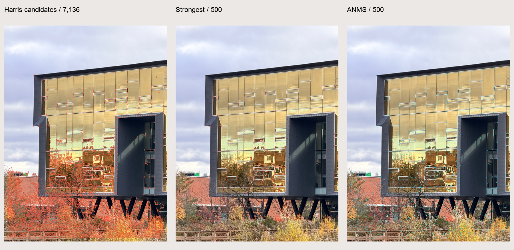
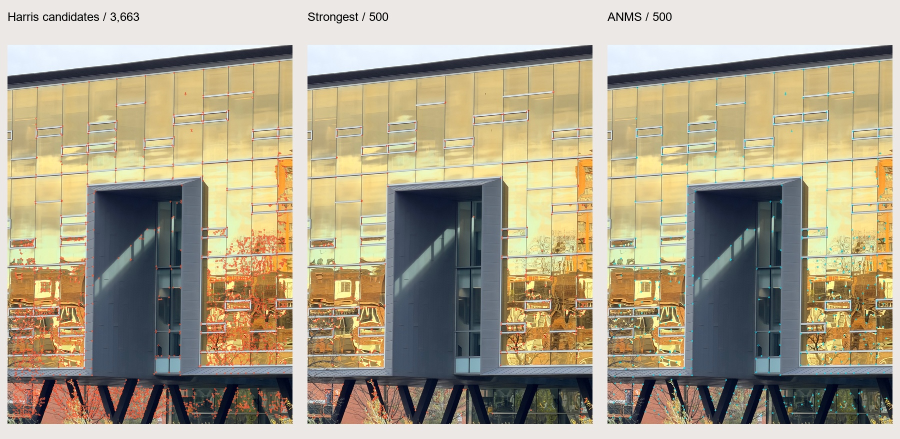
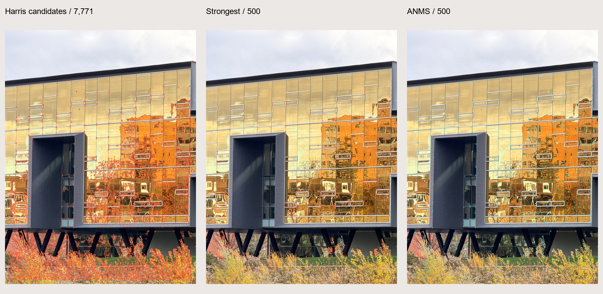
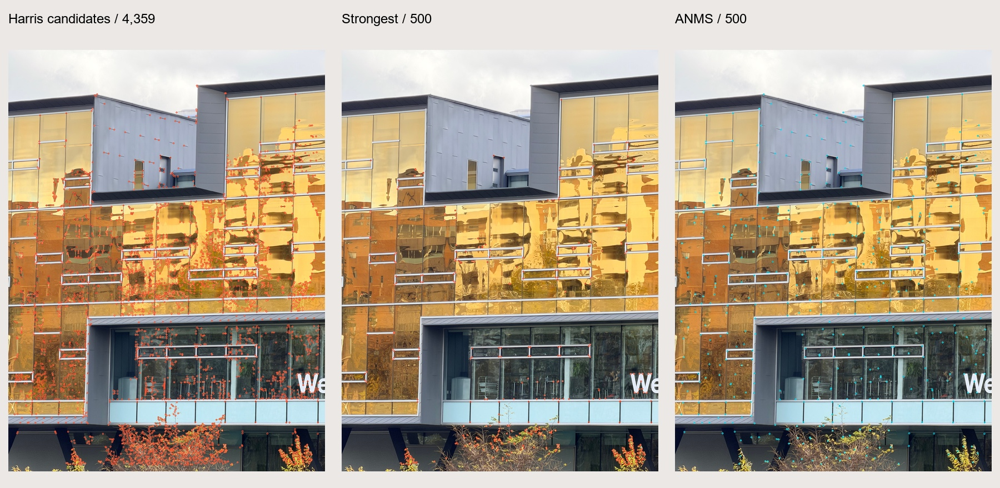
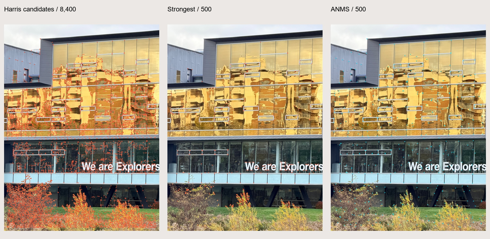
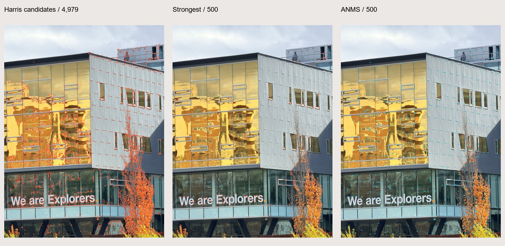

Mosaics
SYDE 671 · Assignment 3 · James Xie
B.1 / FIND
THE CORNERS.
Find strong local structure. Then make room for corners across the image.
01 / Strength is only half the story.

Harris and ANMS process the seven A.4 photos independently, without using their homographies. B.2–B.4 handle descriptors, matching and stitching.
02 / Single-scale Harris response.
Lanczos resizing produces 1200 × 1600 working PNGs. Detection uses one scale, integer centers and no orientation estimate. Grayscale is 0.299R + 0.587G + 0.114B on RGB/255.
After Gaussian smoothing at σ = 1.0, centered differences give gradients. Their products are integrated at σ = 1.5 to form the 2 × 2 second-moment matrix.
Flat regions respond weakly; isolated edges respond negatively; corners can respond positively. This is classical Harris. Brown et al. instead use det(M)/trace(M).
Candidates are positive 3 × 3 maxima above 0.001 of the global maximum, excluding a 24-pixel border for 40 × 40 descriptors. Plateau ties remain candidates; ANMS then ranks the points.
Harris and ANMS are handwritten. OpenCV supplies Gaussian and local-maximum filtering, not feature detection.
03 / A radius set by stronger neighbors.
ANMS measures distance to the nearest sufficiently stronger point across the full candidate pool. The robust factor is 0.9, following section 3 of Brown, Szeliski & Winder (2005).
Without a stronger neighbor, r is infinite. Ties use response, then y and x. NPZ stores infinity; JSON uses null with radius_unbounded. Blocks of 128 limit memory, but cost remains O(N²).
The baseline selects the same number of strongest candidates. ANMS spreads points across textured regions; its radius concerns stronger neighbors, not a guaranteed minimum pairwise spacing.
04 / Compare the distribution.
| Image | Candidates | Points per method | Median nearest distance (px) Strongest → ANMS | Occupied grid cells / 48 Strongest → ANMS |
|---|---|---|---|---|
| 8443 | 7,136 | 500 | 7.62 → 29.53 | 33 → 38 |
| 8444 | 3,663 | 500 | 8.06 → 27.62 | 35 → 46 |
| 8445 | 7,771 | 500 | 7.21 → 31.73 | 33 → 43 |
| 8446 | 4,829 | 500 | 7.28 → 32.39 | 37 → 45 |
| 8447 | 4,359 | 500 | 7.81 → 32.57 | 37 → 46 |
| 8448 | 8,400 | 500 | 8.51 → 34.93 | 39 → 47 |
| 8450 | 4,979 | 500 | 8.00 → 34.62 | 36 → 44 |
Distances use working pixels. Occupancy counts populated cells in a 6 × 8 grid. Equal-sized selections describe spatial distribution, not matching or mosaic accuracy.
ANMS increases spacing and coverage in all seven images. Moving vegetation and reflections can still yield poor matches, and single-scale detection is not scale invariant. B.3 and B.4 evaluate matching and geometry.
IMG_8443 · 4284 × 5712 original pixels
7,136 candidates.
500 selected.

Original photo · Working PNG · All candidates · Strongest 500 · ANMS 500 · All candidate data (NPZ) · Selected points (JSON)


Nearest-neighbor median: 7.62 → 29.53 working pixels. Occupied 6 × 8 grid cells: 33 → 38 of 48. 4 unbounded radii. Minimum finite selected radius: 24.19 pixels, not minimum pairwise spacing.
Response threshold and original-to-working transform
Positive response maximum: 0.000167381935. Absolute threshold: 1.67381935e-07. The same relative threshold, scales and border are used for all images.
0.2801120448 0 -0.3599439776 0 0.2801120448 -0.3599439776 0 0 1
Working pixel centers are integer-valued. Original locations may be fractional because of the recorded resize transform.
IMG_8444 · 3024 × 4032 original pixels
3,663 candidates.
500 selected.

Original photo · Working PNG · All candidates · Strongest 500 · ANMS 500 · All candidate data (NPZ) · Selected points (JSON)


Nearest-neighbor median: 8.06 → 27.62 working pixels. Occupied 6 × 8 grid cells: 35 → 46 of 48. 2 unbounded radii. Minimum finite selected radius: 23.02 pixels, not minimum pairwise spacing.
Response threshold and original-to-working transform
Positive response maximum: 0.000159245111. Absolute threshold: 1.59245111e-07. The same relative threshold, scales and border are used for all images.
0.3968253968 0 -0.3015873016 0 0.3968253968 -0.3015873016 0 0 1
Working pixel centers are integer-valued. Original locations may be fractional because of the recorded resize transform.
IMG_8445 · 4284 × 5712 original pixels
7,771 candidates.
500 selected.

Original photo · Working PNG · All candidates · Strongest 500 · ANMS 500 · All candidate data (NPZ) · Selected points (JSON)


Nearest-neighbor median: 7.21 → 31.73 working pixels. Occupied 6 × 8 grid cells: 33 → 43 of 48. 1 unbounded radii. Minimum finite selected radius: 26.93 pixels, not minimum pairwise spacing.
Response threshold and original-to-working transform
Positive response maximum: 0.00029624304. Absolute threshold: 2.9624304e-07. The same relative threshold, scales and border are used for all images.
0.2801120448 0 -0.3599439776 0 0.2801120448 -0.3599439776 0 0 1
Working pixel centers are integer-valued. Original locations may be fractional because of the recorded resize transform.
IMG_8446 · 3024 × 4032 original pixels
4,829 candidates.
500 selected.
Original photo · Working PNG · All candidates · Strongest 500 · ANMS 500 · All candidate data (NPZ) · Selected points (JSON)


Nearest-neighbor median: 7.28 → 32.39 working pixels. Occupied 6 × 8 grid cells: 37 → 45 of 48. 1 unbounded radii. Minimum finite selected radius: 27.17 pixels, not minimum pairwise spacing.
Response threshold and original-to-working transform
Positive response maximum: 0.000174370885. Absolute threshold: 1.74370885e-07. The same relative threshold, scales and border are used for all images.
0.3968253968 0 -0.3015873016 0 0.3968253968 -0.3015873016 0 0 1
Working pixel centers are integer-valued. Original locations may be fractional because of the recorded resize transform.
IMG_8447 · 3024 × 4032 original pixels
4,359 candidates.
500 selected.

Original photo · Working PNG · All candidates · Strongest 500 · ANMS 500 · All candidate data (NPZ) · Selected points (JSON)


Nearest-neighbor median: 7.81 → 32.57 working pixels. Occupied 6 × 8 grid cells: 37 → 46 of 48. 1 unbounded radii. Minimum finite selected radius: 27.46 pixels, not minimum pairwise spacing.
Response threshold and original-to-working transform
Positive response maximum: 0.00016506063. Absolute threshold: 1.6506063e-07. The same relative threshold, scales and border are used for all images.
0.3968253968 0 -0.3015873016 0 0.3968253968 -0.3015873016 0 0 1
Working pixel centers are integer-valued. Original locations may be fractional because of the recorded resize transform.
IMG_8448 · 4284 × 5712 original pixels
8,400 candidates.
500 selected.

Original photo · Working PNG · All candidates · Strongest 500 · ANMS 500 · All candidate data (NPZ) · Selected points (JSON)


Nearest-neighbor median: 8.51 → 34.93 working pixels. Occupied 6 × 8 grid cells: 39 → 47 of 48. 1 unbounded radii. Minimum finite selected radius: 31.06 pixels, not minimum pairwise spacing.
Response threshold and original-to-working transform
Positive response maximum: 0.000247139109. Absolute threshold: 2.47139109e-07. The same relative threshold, scales and border are used for all images.
0.2801120448 0 -0.3599439776 0 0.2801120448 -0.3599439776 0 0 1
Working pixel centers are integer-valued. Original locations may be fractional because of the recorded resize transform.
IMG_8450 · 3024 × 4032 original pixels
4,979 candidates.
500 selected.

Original photo · Working PNG · All candidates · Strongest 500 · ANMS 500 · All candidate data (NPZ) · Selected points (JSON)


Nearest-neighbor median: 8.00 → 34.62 working pixels. Occupied 6 × 8 grid cells: 36 → 44 of 48. 1 unbounded radii. Minimum finite selected radius: 29.97 pixels, not minimum pairwise spacing.
Response threshold and original-to-working transform
Positive response maximum: 0.000191669236. Absolute threshold: 1.91669236e-07. The same relative threshold, scales and border are used for all images.
0.3968253968 0 -0.3015873016 0 0.3968253968 -0.3015873016 0 0 1
Working pixel centers are integer-valued. Original locations may be fractional because of the recorded resize transform.
05 / Coordinates ready for the next stage.
Coordinates are (x, y) pixel centers, rightward and downward. NPZ saves all candidates, scores, radii, both selections and transforms. JSON saves the selected 500 points; B.2 reuses the same working PNG.
Originals and Part A data are unchanged. Parameters, versions, hashes and metrics are saved in measurements.json.
Reproduce & inspect.
python run_corners.py python build_report.py python -m unittest test_corners -v
Run from B1 using the existing Python environment with NumPy, Pillow and OpenCV. No dependency was added.
Harris, candidate filtering & handwritten ANMS · Real-image experiment · Six analytical unit checks · Parameters & results
Checks cover synthetic corners, edges, known radii, ties, invalid inputs and coordinate conversion. Real data checks verify 20 radii per image, selections and input hashes.
B.2–B.4 show descriptors, matches and the automatic mosaic, which uses seven images against the clarified minimum of three.